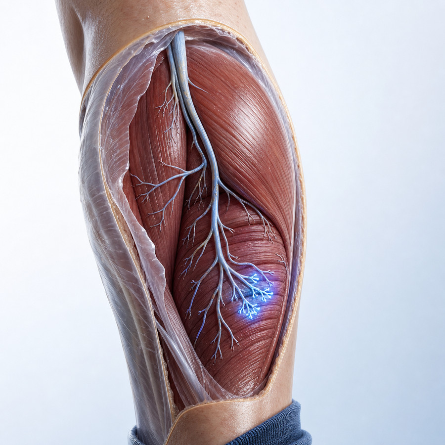
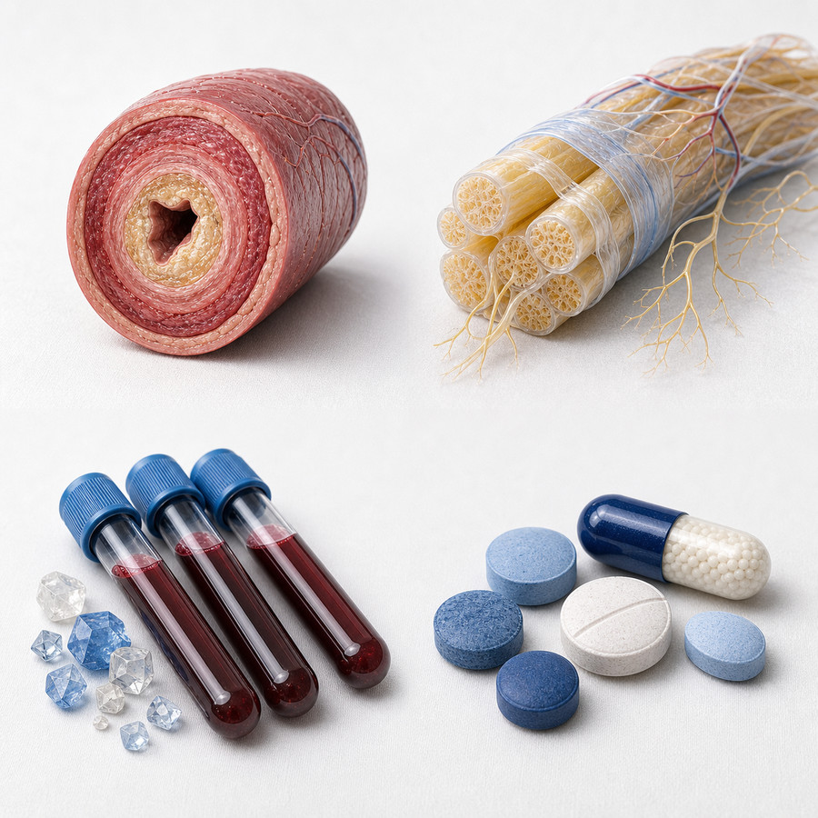
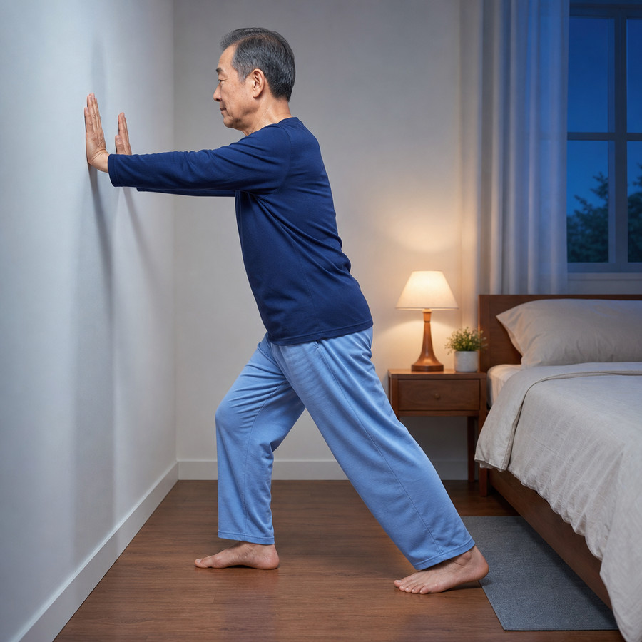
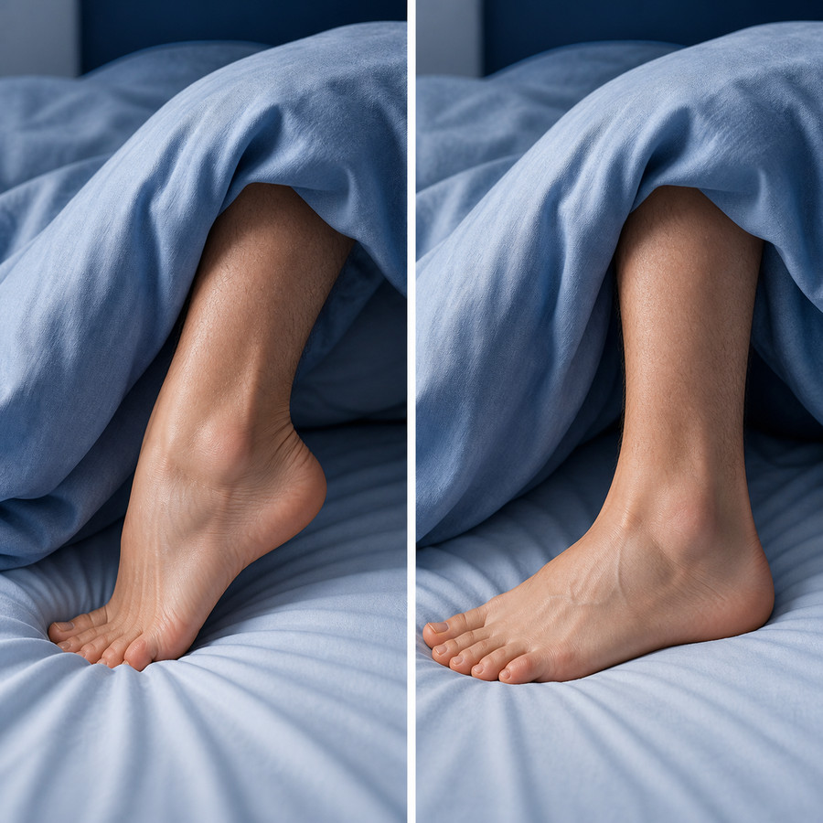

50세 이상 약 33%, 60세 이상 약 50%가 겪습니다. 근육이 실제로 뭉치는지 먼저 확인하세요.
| 헷갈리는 것 | 구별점 |
|---|---|
| 근구축(contracture) | 겉보기엔 쥐 같지만 근전도가 조용함(전기적 침묵) · 스트레칭으로 안 풀림 |
| 근간대경련 | 0.2초 이내로 짧게 홱 움직임 · 통증 없음 |
| 근긴장이상 | 반대 방향 근육이 함께 수축해 자세가 비틀림 |
| 테타니 | 양쪽 대칭 · Chvostek·Trousseau 징후 양성 |
| 하지불안증후군 | 움직이고 싶은 충동만 · 실제로 뭉치지 않음(국내 유병률 5.4~7.5%) |
신경이 근육을 갑자기 수축시키는 일이 흔합니다.

걷거나 움직일 때만 아프거나 감각이 달라지면 알려 주세요.

새로 시작한 약과 건강 상태를 함께 살펴봅니다.
| 약 | 어떻게 경련을 부르나 | 확인할 것 |
|---|---|---|
| 이뇨제 | 칼륨·마그네슘 저하 | 몸속 소금 성분 · 시작 시점과 증상 시점 |
| 흡입 β작용제 | 몸속 소금 성분을 흔듦 | 시작·증량 시점과 비교 |
| 위산억제제(PPI) 장기 | 마그네슘 저하 | 마그네슘 · 계속 필요한지 |
| 스타틴 | 근육에 직접 | 근육효소(CK) 확인 후 감량·변경 검토 |
| 니페디핀 · 랄록시펜·에스트로겐 · 정맥 철분제 | 보고된 약 | 시작 시점과 비교 · 바꿀 수 있는지 |
전형적인 경련은 먼저 이야기와 진찰로 평가합니다.
쥐가 나면 발끝을 몸 쪽으로 천천히 당깁니다.

발끝이 오래 아래로 향하지 않게 이불과 자세를 조절합니다.

마그네슘의 효과는 확인되지 않았고 일부 약은 위험할 수 있습니다.
| 약 | 근거 | 판단 |
|---|---|---|
| 딜티아젬 | 규모가 작은 무작위 시험의 긍정적 신호 PMID 11322688 | 권고하기엔 이릅니다 |
| 비타민 B 복합 | 소규모 무작위 시험 PMID 11301568 | 보조적으로만 |
| 타우린 | 간경변 환자 경련 무작위 대조시험 PMID 30136291 | 간경변일 때(다음 장) |
잠결에도 할 수 있도록 진료실에서 한 번 연습해 보세요.
몸 상태에 따라 일반적인 대처와 다른 치료가 필요할 수 있습니다.
원인 확인, 스트레칭, 재평가 순서로 함께 결정합니다.
QR로 같은 자료를 다시 열 수 있습니다.